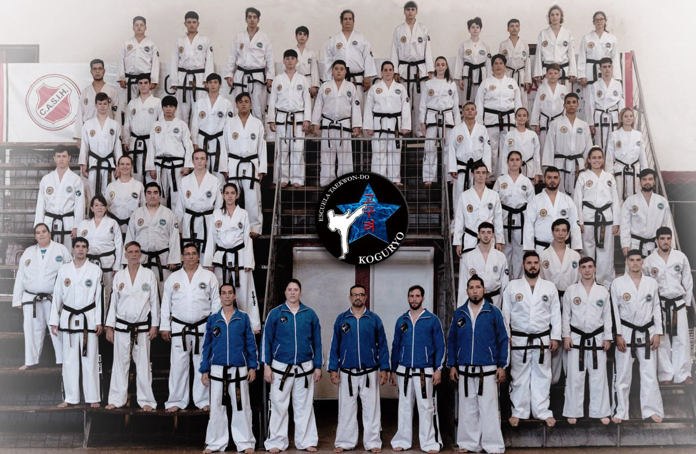
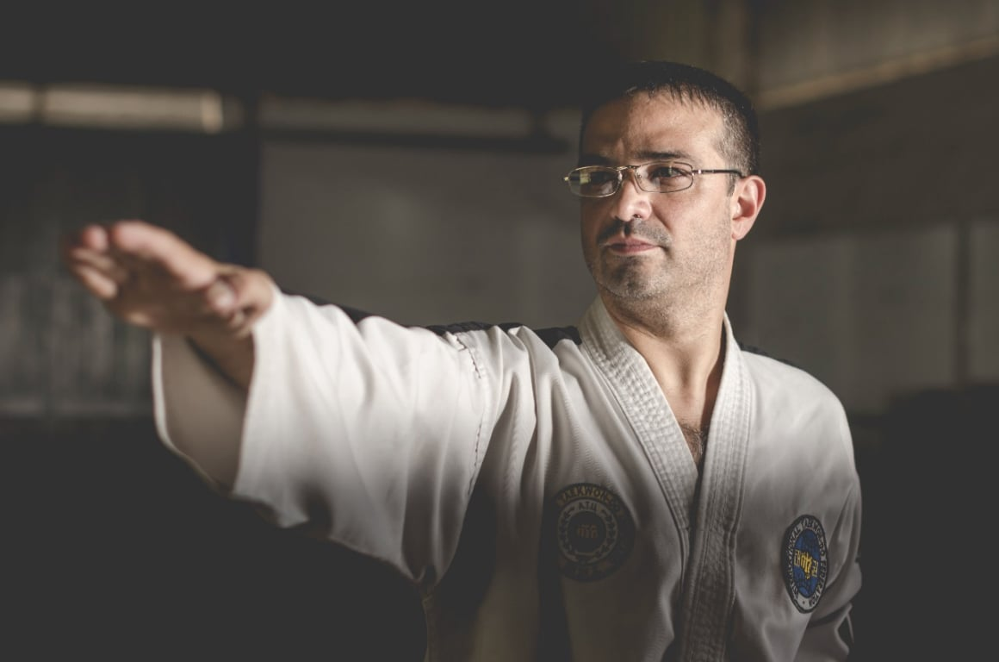

¿Cúal es nuestro objetivo?
Los objetivos de la Asociación Koguryo trascienden la mera práctica física del Taekwon-Do: buscan acompañar a cada estudiante en un proceso integral de crecimiento personal. La asociación se propone fomentar la disciplina, el respeto y la confianza en uno mismo, promoviendo valores que luego puedan trasladarse a la vida cotidiana, a la familia y a la comunidad. A través de un entrenamiento progresivo, se busca que cada alumno desarrolle sus capacidades físicas —como fuerza, flexibilidad, coordinación y precisión técnica— junto con habilidades emocionales y sociales, tales como la responsabilidad, el trabajo en equipo y la resolución pacífica de conflictos. Asimismo, la institución se compromete a brindar un espacio seguro y motivador donde los practicantes puedan superar desafíos, alcanzar metas propias y construir un espíritu resiliente que los acompañe más allá del tatami. En definitiva, su objetivo es formar no solo buenos artistas marciales, sino también personas íntegras, seguras y preparadas para enfrentar la vida con determinación y nobleza.

¿Quiénes somos?
Somos una Asociación de TaeKwon-Do, cuyo principal objetivo es formar personas de bien a través de los 5 principios del TaeKwon-Do: Cortesía - Integridad - Perseverancia - Autocontrol - Espíritu Indómito. Nuestra enseñanza está basada en darle un lugar a cada uno de sus integrantes, ya que cada alumno es único e irremplazable.
La Asociación Koguryo se formó originalmente como escuela hace muchos años y fue reconfirmada como tal en marzo de 2008. Tras años de crecimiento y desarrollo institucional, evolucionó hasta constituirse como asociación, fortaleciendo su compromiso con la enseñanza y difusión del TaeKwon-Do.
Actualmente se encuentra afiliada a la Federación de Taekwon-Do Unificado (FATU).
Nuestro presidente, el Maestro Alejandro Weffling, cuenta con una trayectoria de más de 30 años en la práctica de las Artes Marciales.
La Asociación Koguryo ha obtenido importantes logros y reconocimientos, no solo a nivel nacional, sino también en el plano internacional.

El Taekwon-Do en la Argentina
El TaeKwon-Do ITF en Argentina se encuentra regulado por la Federación ITF de Argentina (FITFA), que se encuentra afiliada a la Confederación Argentina del Deporte (CAD) y a la International TaeKwon-Do Federation (ITF).
El TaeKwon-Do en Argentina tiene una historia de más de 50 años, siendo introducido por los instructores Han Chang Kim, Nam Sung Choi y Kwang Duk Chung en el año 1967. Desde entonces, la disciplina ha crecido de forma sostenida, convirtiéndose en una de las artes marciales más populares y respetadas del país.
Entre los eventos más importantes del calendario nacional destaca el Argentina TaeKwon-Do Tour (ATT), el cual consiste en campeonatos regionales que sirven de clasificación para el Campeonato Nacional, que se realiza a final de año. Estas competencias son de alto nivel y se encuentran televisadas por DeporTV.
Además, Argentina ha sido anfitriona de tres Campeonatos Mundiales de TaeKwon-Do ITF: Chaco 1981, Buenos Aires 1999 y Buenos Aires 2018, siendo esta última edición la más reciente y con una gran participación de competidores de todo el mundo.